Tool Shelf - Armature - Pose Mode
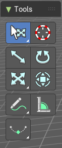
The Pose mode provides some pose tools.
Tweak, Select, 3D Cursor, Transform, Annotate and Measure
The tweak, select, 3d cursor and transform tools and the annotation and measure tool is already described in the chapter Object Mode. So we won't cover it here again.
Breakdowner Push Relax tools group
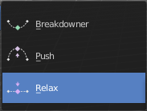
Breakdowner
Creates a suitable breakdowner pose on the current frame. Requires to have a keyframe before and after the current position.
Header values
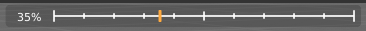
When you activate one of the tools, then you will see a percentage slider in the header. This slider is not interactive. It just displays the percentage of the exaggeration.
Footer hotkey display
In the footer you will some hotkeys for further options. This hotkeys are hard coded, and cannot be changed in the input manager.
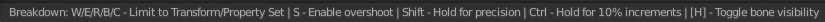
The hotkeys W, E and R stands for the usual transform modes move, rotate or scale. Hotkey B stands for Bendy Bones. And C is for a custom property.
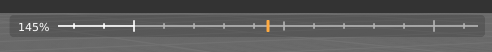
Overshoot allows you to go over the 0 -100 per cent range. The header values shows a bigger range then.
The rest of the hotkeys should be self explaining.
Breakdowner
Create a suitable breakdowner pose on the current frame.
Header Values
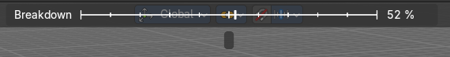
When you move the mouse then you will see some values in the header, which shows the current factor. This value is relative to the starting value, which always starts with 0.
It also shows some more available transform hotkeys. The hotkeys W E and R allows you just to move, rotate or scale. Hotkey B stands for Bendy Bones. And C is for a custom property. This hotkeys are hard coded, and cannot be changed in the input manager.
Last Operator Pose Breakdowner
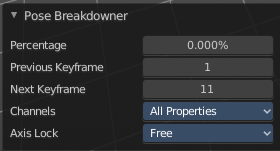
| Entry | What it does |
|---|---|
| Percentage | The percentage of exaggeration. Interestingly the value in the Last operator differs from the value in the header. |
| Previous Keyframe | The keyframe position before the current frame. |
| Next Keyframe | The keyframe position after the current frame. |
Channels
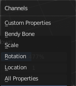
Which channels to affect.
Axis Lock
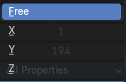
Lock the action to specific axis.
Push
Push exaggerates the current pose.
Header Values
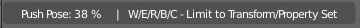
When you move the mouse then you will see some values in the header, which shows the current factor. This value is relative to the starting value, which always starts with 0.
It also shows some more available transform hotkeys. The hotkeys W E and R allows you just to move, rotate or scale. Hotkey B stands for Bendy Bones. And C is for a custom property. This hotkeys are hard coded, and cannot be changed in the input manager.
Last Operator Push Pose from Breakdown.
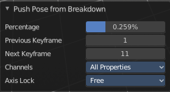
| Entry | What it does |
|---|---|
| Previous Keyframe | The keyframe position before the current frame. |
| Next Keyframe | The keyframe position after the current frame. |
| Percentage | The percentage of exaggeration. Interestingly the value in the Last operator differs from the value in the header. |
Channels
Which channels to affect.
Axis Lock
Lock the action to specific axis.
Relax
Relax relaxes the current pose.
Header Values
When you move the mouse then you will see some values in the header, which shows the current factor. This value is relative to the starting value, which always starts with 0. It also shows some more available transform hotkeys.
It also shows some more available transform hotkeys. The hotkeys W E and R allows you just to move, rotate or scale. Hotkey B stands for Bendy Bones. And C is for a custom property. This hotkeys are hard coded, and cannot be changed in the input manager.
Last Operator Relax Pose to Breakdown
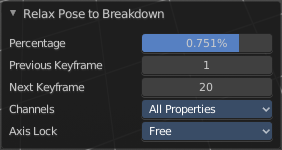
| Entry | What it does |
|---|---|
| Previous Keyframe | The keyframe position before the current frame. |
| Next Keyframe | The keyframe position after the current frame. |
| Percentage | The percentage of exaggeration. Interestingly the value in the Last operator differs from the value in the header. |
Channels
Here you can again choose if you just want to limit a specific channel.
Axis Lock
Allows you to lock a specific axis.